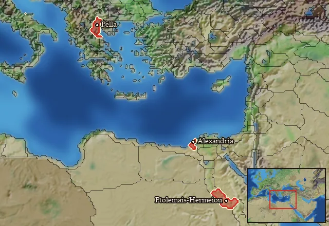
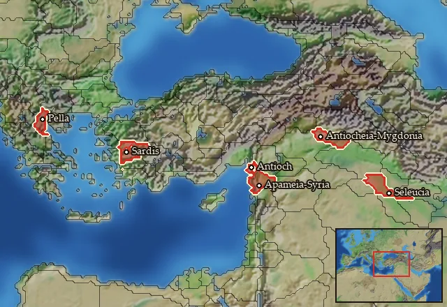

RTR: Imperium Surrectum
RTR: Imperium SurrectumRIS wiki › RIS Light › tags
Other recruitment tags
Main campaignRIS Light
← all regions and settlements · wiki index
Region markers that recruitment checks but that are neither a recruitment zone nor a homeland. A unit requirement "not in a Ptolemaic region" means the unit cannot be raised in the regions listed under that marker here, whoever holds them.
Ptolemaic
3 regions · 3 units

- Carrying this zone withholds 3 units that a broader zone would otherwise give; that is how the generic rosters step aside for a local one.
Regions in this zone (3)
Seleucid
6 regions · 0 units

No unit is recruited through this zone in the current version.
- Carrying this zone withholds 1 unit that a broader zone would otherwise give; that is how the generic rosters step aside for a local one.
Regions in this zone (6)
Apamene · Emathia · Lydia · Mesopotamia · Mygdonia-Syria · Syria